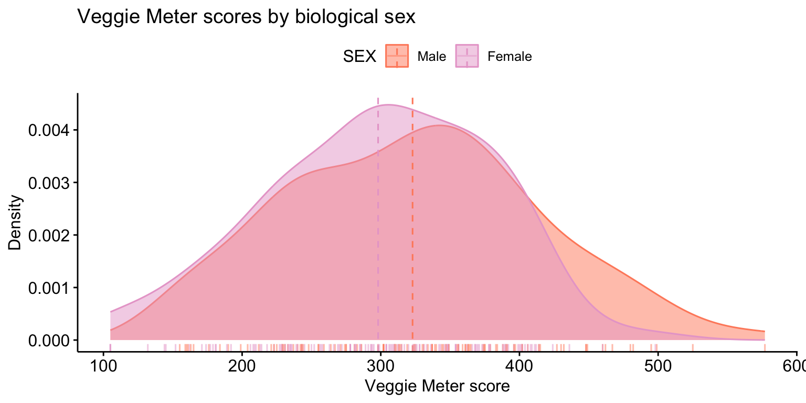
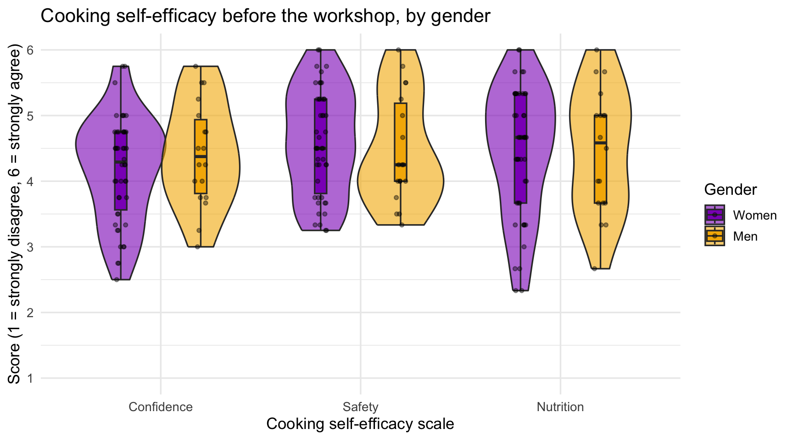
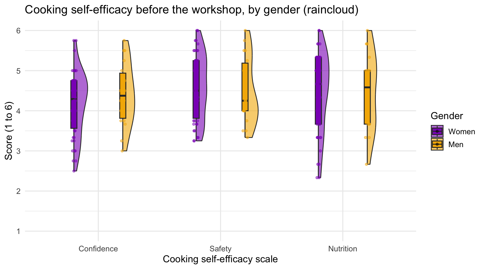
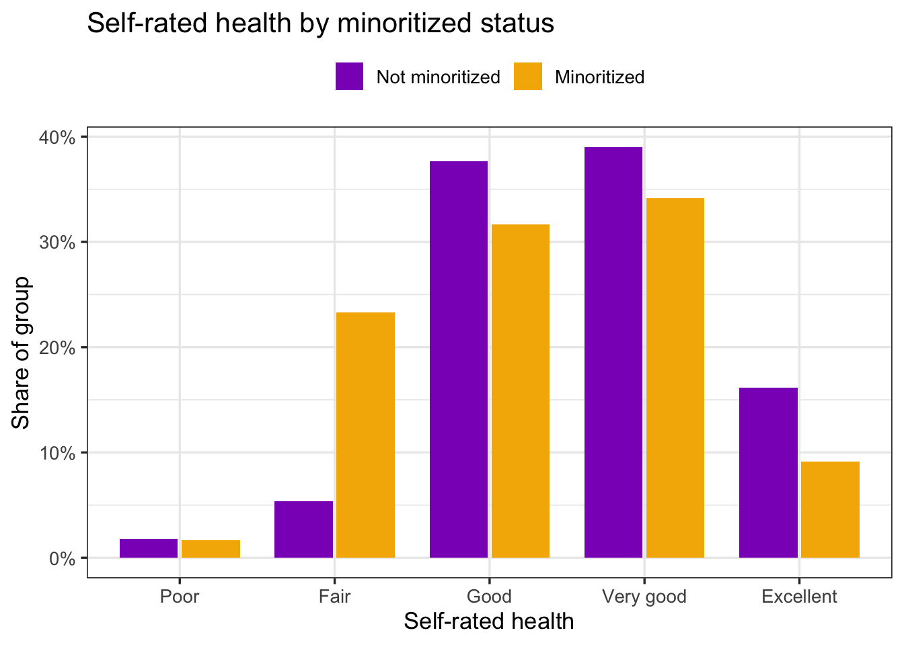

library(tidyverse) # dplyr, tidyr, ggplot2
library(readxl)
library(psych) # scoreItems() for the composites in Play 2
library(ggpubr) # ggdensity() in Play 1
library(see) # geom_violinhalf() in Play 2
library(knitr)21 Compare 2 Groups
Independent-samples t-test (normal) and Mann-Whitney U (non-normal)
Abstract
This chapter is the Analysis Map’s “compare 2 groups” row: two groups of different people and one continuous outcome. Researchers learn when the independent-samples t-test is the right test and when it is not (the paired design is a different chapter), how to look at the two groups before testing (a density plot made in one line with ggpubr, or a violin and raincloud plot built layer by layer in ggplot2), how to check the assumptions and choose between the Welch t-test (normal data) and the Mann-Whitney U test (data that are not normal, or a single rating), how to report the result with an effect size, and how to catch the data problems that show up before any test can run. Two Plays use synthetic versions of real FRI team datasets (Veggie Meter skin-carotenoid scores by biological sex, and cooking self-efficacy composites by gender before a cooking workshop) and a third uses the Cohort 10 health status data to compare self-rated health by minoritized status with the Mann-Whitney U test. The Lab runs the same comparisons on the lab dataset with Ref’s checks, and Your Turn gives the template for the team dataset.
Keywords
t-test, independent samples, Welch, Mann-Whitney U, Wilcoxon rank-sum, Cohen’s d, ggpubr, violin plot, raincloud plot
Resources Ref’s kickoff: find the Ref before you code
Ref’s kickoff: find the Ref before you code
Ref’s kickoff: find the Ref before you code
Open Project → Open .qmd → Run load-library chunk → Run All Chunks Above → code. If anything looks wrong, use Ref’s Quick Checklist.
ResourcesResources:
ggpubr (new in this chapter), ggplot2, and see
ggpubr is ggplot2 with the layers already assembled: one function call gives a finished, publication-style plot. Use it when you want the standard picture fast. Drop back to ggplot2 when you want to control every layer.
ggpubrhome page and theggpubrcheat sheet (PDF)ggdensity(): the density plot used in Play 1ggviolin()andggboxplot(): one-line violin and box plotsgeom_violin()in ggplot2, used in Play 2geom_violinhalf()in theseepackage, the half violin of a raincloud plot- Raincloud plots with ggplot2 (Cédric Scherer) and Allen et al. (2019), the raincloud paper
- R for Data Science, Ch. 10: Exploratory data analysis (distributions by group)
ImportantImportant: two packages to install once
ggpubr and see are on the install.R list (R Packages). If library(ggpubr) says there is no package called 'ggpubr', source install.R again.
21.1 When is this the right test?
You have two groups of different people and one continuous outcome, and you want to know whether the two groups differ on average. Three examples: 1) male and female participants on their Veggie Meter score, 2) people who have had mental health treatment and people who have not on their well-being, and 3) People of Color and White participants on their experiences of harm in health care. On The Analysis Map that is the compare 2 groups row, and the test is the independent-samples t-test.
Two things decide whether you are on this row:
- The group variable has exactly two levels. Usually it is a
_01variable from the survey (TREATED_01,KNOWS_01) or a_01CATyou made in Transforming Your Data (RACIALIZED_01,DISTRESS_01). Three or more groups is the next row, Compare 3+ Groups. - The two groups are different people. If the same people were measured twice, before and after something, that is a paired design: the differences live within each person, and the test is the paired t-test (Compare 1 Group, Pre/Post, for Teams 3 and 5). Running an independent-samples test on pre/post data is the most common wrong turn on the map, so decide this first.
The outcome should be a score, not a category: a composite from 1 to 5, a Veggie Meter number, an age. If the outcome is yes/no, you need a different test (a chi-square), and your peer mentor and/or Dr. Shane can point you to it.
Once you are on this row, the shape of the outcome picks the test, exactly as the two lines in each Analysis Map box say:
| Test | Use it when | R function | Report |
|---|---|---|---|
| Independent-samples t-test (parametric) | the outcome is roughly normal in each group, or each group has 30 or more people | t.test() |
M, SD, t(df), p, Cohen’s d |
| Mann-Whitney U test (non-parametric) | the outcome is skewed, a group is small, or the outcome is a single rating with a few levels (1 to 5) | wilcox.test() |
Mdn, U, p, r |
Play 1 and Play 2 are the parametric case; Play 3 is the non-parametric case. Compare 1 Group, Pre/Post and Compare 3+ Groups follow the same two-line structure.
21.2 📋 The Play
Two plays, two teams, two ways to draw the same picture. Play 1 uses ggpubr, which makes the standard plot in one call. Play 2 builds a violin and raincloud plot in ggplot2, layer by layer. The test is the same in both.
21.2.1 Play 1 (independent-samples t-test): compare male and female participants on Veggie Meter score, with a ggpubr density plot
ResourcesAbout the dataset:
veggiescore_SYNTHETIC.xlsx
In fall 2025 a team in the FRI Public Health stream measured fruit and vegetable intake with the Veggie Meter®, a device that estimates skin carotenoids from a finger scan and returns a score of roughly 100 to 800. The convenience sample was Binghamton University students on campus and Broome County residents at a farmers market, scanned in September and October 2025.
The file in this chapter is synthetic: every row was generated by a seeded script (make_play_datasets.py) and no row describes a real person, which is why it can be published with the playbook. It keeps what makes the real export a good teaching case: the same variables, the same approximate group means and spreads (male participants scoring higher on average, with a small to medium difference), the same share of declines and blanks on SEX, and the same kinds of junk in VEGGIESCORE that the real scanner sheet had (two typed words, a scanner read-out pasted twice, a handful of impossible numbers). What differs: the real file had 309 rows with the team’s actual participant passwords, timestamps, and Qualtrics metadata, which are not here, and the real CONSUMPTION and LOCATION answers were replaced by seeded ones with the same distribution. The t-test result is of the same size and direction as the team’s, not the team’s number.
ImportantImportant: biological sex is not gender identity
Biological sex and gender identity are not the same thing, and the standardized class variables used in this playbook measure gender identity (GENDER, Name and Recode Variables in Qualtrics), not biological sex. This study used biological sex because the Veggie Meter’s reference distributions are reported by biological sex, so the team needed the same variable to compare their sample with the norms. The variable is therefore named SEX, coded 0 = male and 1 = female, and the groups are called male and female participants below, not men and women, which are gender terms. When you compare groups in your own data, say which construct you measured and why.
Step 1: Import and look before you clean
veggiedata <- read_excel("data/veggiescore_SYNTHETIC.xlsx")
nrow(veggiedata)[1] 300summary(veggiedata$VEGGIESCORE) Length Class Mode
300 character character veggiedata |> count(SEX)# A tibble: 4 × 2
SEX n
<dbl> <int>
1 -99 6
2 0 116
3 1 154
4 NA 24Two problems are visible already. summary() of VEGGIESCORE prints Length and Class :character instead of a minimum and a maximum: the column came in as text, because a few cells contain words (Import Data Once, Lab Play 5). And SEX has values other than 0 and 1: -99 (prefer not to say) and NA (skipped).
These problems are not invented for the exercise. The real export from the Veggie Meter team had exactly these flaws: the scanner’s results were typed into a spreadsheet by hand, so a few cells held a word instead of a number, a scanner read-out was pasted into the score column, and a handful of failed scans produced impossible numbers. The synthetic file reproduces each kind of flaw (with made-up values) so that you practice the cleaning decisions on the kind of mess a real team dataset has.
Step 2: Clean, and decide the rules out loud
veggiedata <- veggiedata |>
mutate(VEGGIESCORE = as.numeric(VEGGIESCORE)) # words become NA; numbers stay numbers
summary(veggiedata$VEGGIESCORE) # now you can see the range Min. 1st Qu. Median Mean 3rd Qu. Max. NA's
1.000e+00 2.430e+02 3.120e+02 2.343e+07 3.740e+02 6.465e+09 24 Now summary() shows the range, and it is wrong at both ends: a minimum of 1 and a maximum in the billions. No skin-carotenoid scan produces those numbers; they are the pasted read-out and the failed scans described above. The cleaning rule has to come from what the instrument can measure, not from the data: the Veggie Meter’s plausible range is about 100 to 800, so keep scores in that range. And a two-group test needs two groups, so keep only the people with SEX coded 0 or 1. Write both rules in your Methods, with the number of people each one removed.
veggiedata_clean <- veggiedata |>
filter(VEGGIESCORE >= 100, VEGGIESCORE <= 800, # plausible scores only
SEX %in% c(0, 1)) |> # the two groups (drops -99 and NA)
mutate(SEX = factor(SEX, levels = c(0, 1), labels = c("Male", "Female")))
nrow(veggiedata_clean)[1] 238veggiedata_clean |>
group_by(SEX) |>
summarise(n = n(), mean = mean(VEGGIESCORE), sd = sd(VEGGIESCORE))# A tibble: 2 × 4
SEX n mean sd
<fct> <int> <dbl> <dbl>
1 Male 105 323. 91.3
2 Female 133 298. 80.6#source: R4DS Ch. 3 https://r4ds.hadley.nz/data-transform.html
#explanation: text scores become numbers; impossible scores and people without a group are removed; the group variable becomes a labeled factorWrite the rule in your Methods: “Scores outside the instrument’s range (100 to 800) were excluded (n = 9), as were participants who did not report biological sex (n = 30).” The numbers you excluded are part of the result.
Step 3: Look at the two groups: ggdensity()
A density plot is a smoothed histogram. With two groups it shows, in one picture, whether the groups overlap and where their centers sit. In ggpubr it is one call, with the group mean drawn as a dashed line and every person as a tick on the axis (rug = TRUE).
plot1_veggiescore_sex_density <- ggdensity(veggiedata_clean, x = "VEGGIESCORE",
color = "SEX", fill = "SEX",
palette = c("#ff8c6b", "#e8a7d0"),
add = "mean", rug = TRUE,
xlab = "Veggie Meter score", ylab = "Density",
title = "Veggie Meter scores by biological sex") +
scale_x_continuous(breaks = seq(100, 800, by = 100))
plot1_veggiescore_sex_density
ggsave("plots/plot1_veggiescore_sex_density.png", plot = plot1_veggiescore_sex_density,
width = 8, height = 5, dpi = 300)
#source: ggpubr documentation https://rpkgs.datanovia.com/ggpubr/reference/ggdensity.html
#explanation: one density curve per group, with the mean of each group as a dashed line and each person's score as a rug tickThe curves overlap a lot, and the male participants’ mean is a little to the right. That is what a small difference looks like. The test tells you whether a difference this size is more than chance would produce.
Step 4: Check the assumptions
The t-test assumes the outcome is roughly normal within each group (less important when each group has 30 or more people) and does not assume equal variances if you use the Welch version, which is R’s default. Check normality the way Describe Your Variables showed: a histogram or Q-Q plot per group and the Shapiro-Wilk test.
veggiedata_clean |>
group_by(SEX) |>
summarise(shapiro_p = shapiro.test(VEGGIESCORE)$p.value)# A tibble: 2 × 2
SEX shapiro_p
<fct> <dbl>
1 Male 0.379
2 Female 0.200Both p-values are above .05, so there is no evidence against normality in either group. If one had been below .05 with a small group, you would run the non-parametric test in Step 6 as well and report both.
Step 5: The independent-samples t-test
# ttestmodel1: VEGGIESCORE by SEX (Welch t-test)
ttestmodel1 <- t.test(VEGGIESCORE ~ SEX, data = veggiedata_clean) # Welch t-test (var.equal = FALSE is the default)
ttestmodel1
Welch Two Sample t-test
data: VEGGIESCORE by SEX
t = 2.1961, df = 209.01, p-value = 0.02919
alternative hypothesis: true difference in means between group Male and group Female is not equal to 0
95 percent confidence interval:
2.543265 47.169016
sample estimates:
mean in group Male mean in group Female
322.9238 298.0677 #source: https://www.datacamp.com/tutorial/t-tests-r-tutorial
#explanation: the formula means "VEGGIESCORE split by SEX"; Welch's version does not assume the two groups have equal spreadRead four things from the output: the two group means at the bottom; t, the difference in means divided by its standard error; df, the degrees of freedom (Welch’s are not a whole number); and the p-value. Here p is below .05, so the difference is unlikely to be chance alone.
Step 6: Effect size, and a check with the Mann-Whitney U
A p-value says whether the difference is detectable, not whether it is big. Cohen’s d is the difference in means in standard-deviation units: about 0.2 is small, 0.5 medium, 0.8 large.
cohens_d <- function(x, y) (mean(x) - mean(y)) / sqrt((var(x) + var(y)) / 2)
male <- veggiedata_clean$VEGGIESCORE[veggiedata_clean$SEX == "Male"]
female <- veggiedata_clean$VEGGIESCORE[veggiedata_clean$SEX == "Female"]
cohens_d(male, female)[1] 0.2887757wilcox.test(VEGGIESCORE ~ SEX, data = veggiedata_clean) # Mann-Whitney U (R calls it the Wilcoxon rank sum test); Play 3 explains it
Wilcoxon rank sum test with continuity correction
data: VEGGIESCORE by SEX
W = 7938, p-value = 0.07016
alternative hypothesis: true location shift is not equal to 0#source: Cohen (1988); R documentation ?wilcox.test
#explanation: d is the mean difference divided by the pooled standard deviation; the Mann-Whitney U test compares the groups by rank, without assuming normalityThe two tests disagree: the Welch t-test is significant (p = .029) and the Mann-Whitney U test is not (p = .070). That is not a mistake. The t-test compares means and the Mann-Whitney U test compares the whole distributions by rank, and when the data are close to normal the t-test has more power to detect a difference. With a small effect (d = 0.29, about a quarter of a standard deviation) and about 240 people, the evidence sits near the .05 threshold, so a slightly less powerful test lands on the other side of it. Report the test your assumption checks point to (here the Shapiro-Wilk results support the t-test), name the effect size, and do not describe a p of .029 as strong evidence of a large difference.
Step 7: Report it
One sentence with the means, the test, and the effect size, plus the figure. In APA style:
Male participants (M = 322.9, SD = 91.3, n = 105) had higher Veggie Meter scores than female participants (M = 298.1, SD = 80.6, n = 133), Welch t(209.0) = 2.20, p = .029, d = 0.29, a small effect (Figure 1).
Every number in that sentence comes from Steps 2, 5, and 6, and the sentence says which groups, how many, which direction, and how big.
21.2.2 Play 2 (independent-samples t-tests): compare women and men on three cooking self-efficacy scales, with ggplot2 violin and raincloud plots
ResourcesAbout the dataset:
foodsecurity_SYNTHETIC.xlsx
In fall 2025 another FRI Public Health team studied cooking skills and food security among Binghamton students: a pretest survey, a hands-on cooking workshop, and the same survey again two weeks later. The survey measured cooking self-efficacy with three short scales (confidence, food safety, nutrition; 1 = strongly disagree to 6 = strongly agree), plus cooking knowledge, barriers to cooking, food insecurity, and open-ended questions about culture and gender.
The file here is synthetic, generated by the same seeded script as Play 1’s, so it can be public. It keeps the real survey’s variables and response scales, the pretest item means, the share of -99 and -50 codes, the gender mix (mostly women), and the long pre/post layout linked by PASSWORD. Two things are different on purpose. The real export had only 45 responses and almost no one could be linked from pretest to posttest, so a paired analysis was impossible; the synthetic file has 72 pretest and 60 posttest rows with 59 people matched, a few dropouts, one duplicate, and two mistyped passwords, so that Compare 1 Group, Pre/Post can use the same file. And the variables were renamed to the class conventions (GENDER 0 to 3, RACIALIZED as select-all columns, _01 for yes/no, _QUAL for open text) where the real survey predated them. Every open-ended answer is a short invented phrase.
This play uses only the pretest rows, because the question is a two-group one: before the workshop, did women and men differ in cooking self-efficacy? The file is in long format with both time points, so the first step is to keep one row per person.
Step 1: Import, clean, and keep the pretest
foodsecuritydata <- read_excel("data/foodsecurity_SYNTHETIC.xlsx")
foodsecuritydata[foodsecuritydata == -99] <- NA # prefer not to say -> missing
foodsecuritydata[foodsecuritydata == -50] <- NA # don't know -> missing
foodsecuritydata_pre <- foodsecuritydata |>
mutate(PASSWORD = tolower(trimws(PASSWORD))) |> # clean the linking code (Pre/Post Data)
filter(TIME == 0) |> # pretest only
distinct(PASSWORD, .keep_all = TRUE) # one row per person (drops the duplicate submission)
nrow(foodsecuritydata_pre)[1] 72foodsecuritydata_pre |> count(GENDER)# A tibble: 5 × 2
GENDER n
<dbl> <int>
1 0 46
2 1 18
3 2 5
4 3 1
5 NA 2#source: Import Data Once; Pre/Post Data
#explanation: missing codes become NA; the pretest rows are kept, one per personGENDER has four levels, but two of them have a handful of people. A two-group test needs two groups, so this play compares women (0) and men (1) and sets the others aside, and says so.
foodsecuritydata_pre2 <- foodsecuritydata_pre |>
filter(GENDER %in% c(0, 1)) |>
mutate(GENDER = factor(GENDER, levels = c(0, 1), labels = c("Women", "Men")))
foodsecuritydata_pre2 |> count(GENDER)# A tibble: 2 × 2
GENDER n
<fct> <int>
1 Women 46
2 Men 18#explanation: the two groups to compare, as a labeled factor with the comparison group (women) firstStep 2: Make the three composites
The outcome is not one column but three scales. Creating Composites showed scoreItems(); here it is again, with the alphas for the Methods section.
eff_keys <- list(
EFF_CONF = c("EFFCONF1", "EFFCONF2", "EFFCONF3", "EFFCONF4"),
EFF_SAFE = c("EFFSAFE1", "EFFSAFE2", "EFFSAFE3", "EFFSAFE4"),
EFF_NUTRI = c("EFFNUTRI1", "EFFNUTRI2", "EFFNUTRI3"))
eff_scores <- scoreItems(eff_keys, foodsecuritydata_pre2, impute = "none")
round(eff_scores$alpha, 2) # reliability of each scale EFF_CONF EFF_SAFE EFF_NUTRI
alpha 0.59 0.7 0.79foodsecuritydata_pre2 <- foodsecuritydata_pre2 |>
mutate(EFF_CONF = eff_scores$scores[, "EFF_CONF"],
EFF_SAFE = eff_scores$scores[, "EFF_SAFE"],
EFF_NUTRI = eff_scores$scores[, "EFF_NUTRI"])
#source: Creating Composites; psych package (Revelle)
#explanation: three keys, three averaged scores added to the data, and Cronbach's alpha for eachStep 3: One long table for the plot
A plot that shows all three scales side by side needs them in one column, with a second column saying which scale each score belongs to. That is pivot_longer() from Pre/Post Data.
foodsecuritydata_pre_long <- foodsecuritydata_pre2 |>
select(PASSWORD, GENDER, EFF_CONF, EFF_SAFE, EFF_NUTRI) |>
pivot_longer(cols = c(EFF_CONF, EFF_SAFE, EFF_NUTRI),
names_to = "SCALE", values_to = "SCORE") |>
mutate(SCALE = factor(SCALE, levels = c("EFF_CONF", "EFF_SAFE", "EFF_NUTRI"),
labels = c("Confidence", "Safety", "Nutrition")))
head(foodsecuritydata_pre_long)# A tibble: 6 × 4
PASSWORD GENDER SCALE SCORE
<chr> <fct> <fct> <dbl>
1 river3248 Women Confidence 4
2 river3248 Women Safety 4.5
3 river3248 Women Nutrition 4.33
4 sunny8796 Men Confidence 4.5
5 sunny8796 Men Safety 5
6 sunny8796 Men Nutrition 3.33Step 4: Violin plot, built in layers
A violin plot is a box plot with the distribution drawn around it: the width at each height is how many people scored there (a smoothed histogram turned on its side). Add the box plot inside it for the median and quartiles, and the raw points so that the reader can see how many people are behind each shape.
plot2_efficacy_gender_violin <- ggplot(foodsecuritydata_pre_long, aes(x = SCALE, y = SCORE, fill = GENDER)) +
geom_violin(trim = TRUE, alpha = 0.6, position = position_dodge(width = 0.8)) +
geom_boxplot(width = 0.12, outlier.shape = NA, position = position_dodge(width = 0.8)) +
geom_jitter(position = position_jitterdodge(jitter.width = 0.12, dodge.width = 0.8),
alpha = 0.4, size = 1.2) +
scale_fill_manual(values = c("Women" = "#8d14c1", "Men" = "#f4b400")) +
scale_y_continuous(breaks = 1:6, limits = c(1, 6)) +
labs(x = "Cooking self-efficacy scale", y = "Score (1 = strongly disagree, 6 = strongly agree)",
fill = "Gender", title = "Cooking self-efficacy before the workshop, by gender") +
theme_minimal(base_size = 13)
plot2_efficacy_gender_violin
ggsave("plots/plot2_efficacy_gender_violin.png", plot = plot2_efficacy_gender_violin, width = 8, height = 5, dpi = 300)
#source: ggplot2 documentation https://ggplot2.tidyverse.org/reference/geom_violin.html
#explanation: three layers on one plot: the violin (distribution), the box (median and quartiles), the jittered points (every person); position_dodge puts the two genders side by side within each scale
GoGo: reading a violin
Wide at the top means many people scored high. Two bulges mean two kinds of people. A long thin tail means a few people far from the rest. A violin tells you whether the groups differ in shape, not only in their average, which is something a bar chart of means cannot show.
Step 5: Raincloud plot
A raincloud plot is the same information with the layers pulled apart so that none hides another: a half violin (the cloud), the box plot beside it, and the raw points below (the rain). geom_violinhalf() comes from the see package.
plot3_efficacy_gender_raincloud <- ggplot(foodsecuritydata_pre_long, aes(x = SCALE, y = SCORE, fill = GENDER)) +
geom_violinhalf(position = position_dodge(width = 0.8), alpha = 0.6, trim = TRUE) +
geom_boxplot(width = 0.1, outlier.shape = NA, position = position_dodge(width = 0.8)) +
geom_point(aes(color = GENDER),
position = position_jitterdodge(jitter.width = 0.08, dodge.width = 0.8, seed = 1),
alpha = 0.5, size = 1.2) +
scale_fill_manual(values = c("Women" = "#8d14c1", "Men" = "#f4b400")) +
scale_color_manual(values = c("Women" = "#8d14c1", "Men" = "#f4b400"), guide = "none") +
scale_y_continuous(breaks = 1:6, limits = c(1, 6)) +
labs(x = "Cooking self-efficacy scale", y = "Score (1 to 6)", fill = "Gender",
title = "Cooking self-efficacy before the workshop, by gender (raincloud)") +
theme_minimal(base_size = 13)
plot3_efficacy_gender_raincloud
ggsave("plots/plot3_efficacy_gender_raincloud.png", plot = plot3_efficacy_gender_raincloud, width = 8, height = 5, dpi = 300)
#source: see package https://easystats.github.io/see/reference/geom_violinhalf.html; Allen et al. (2019)
#explanation: a half violin instead of a full one, so the box and the points have room beside itStep 6: One t-test per scale, then report
Three outcomes means three tests. Run them the same way as Play 1, and report each with its means and effect size.
# ttestmodel2: EFF_CONF by GENDER
ttestmodel2 <- t.test(EFF_CONF ~ GENDER, data = foodsecuritydata_pre2)
# ttestmodel3: EFF_SAFE by GENDER
ttestmodel3 <- t.test(EFF_SAFE ~ GENDER, data = foodsecuritydata_pre2)
# ttestmodel4: EFF_NUTRI by GENDER
ttestmodel4 <- t.test(EFF_NUTRI ~ GENDER, data = foodsecuritydata_pre2)
ttestmodel2
Welch Two Sample t-test
data: EFF_CONF by GENDER
t = -1.0545, df = 31.535, p-value = 0.2996
alternative hypothesis: true difference in means between group Women and group Men is not equal to 0
95 percent confidence interval:
-0.6824042 0.2170257
sample estimates:
mean in group Women mean in group Men
4.179348 4.412037 #explanation: Welch t-test for each composite; print the other two the same way| Scale | Women M (SD) | Men M (SD) | t | df | p | d |
|---|---|---|---|---|---|---|
| EFF_CONF | 4.18 (0.80) | 4.41 (0.79) | -1.05 | 31.5 | .300 | -0.29 |
| EFF_SAFE | 4.60 (0.81) | 4.47 (0.83) | 0.54 | 30.3 | .593 | 0.15 |
| EFF_NUTRI | 4.44 (0.99) | 4.45 (0.95) | -0.04 | 32.2 | .965 | -0.01 |
When you have several tests like this, a table is clearer than three sentences, and one sentence then summarizes the table: which scales differed, in which direction, and how large the differences were. Here the answer is that none did: all three p-values are well above .05 and the effect sizes are small, so before the workshop women and men reported similar cooking self-efficacy. A null result is a result; report it with the same numbers. With three tests you have three chances for a false positive; say so, or use a stricter alpha (.05 ÷ 3 ≈ .017), and your peer mentor and/or Dr. Shane can help you decide.
CautionCaution: the n behind the plot
Play 2 has 18 men. A violin drawn from a group that small is a smoothed curve through a few points, and it can look like a shape that is not there. Always print count() by group before you trust the picture, and report the n of each group in the caption.
21.2.3 Play 3 (Mann-Whitney U test): compare minoritized and non-minoritized participants on self-rated health
Plays 1 and 2 had outcomes that were roughly normal, so the t-test was the right line of the Analysis Map box. This play is the other line. The outcome is one question, not a composite: “In general, would you say your health is…” with five answers from Poor (1) to Excellent (5). A 1-to-5 rating with most people on 3 and 4 cannot be normal, and its mean (3.4, say) is not a value anyone chose. The Mann-Whitney U test compares two groups without assuming normality: it ranks every person’s score from lowest to highest, pools the ranks, and asks whether one group’s ranks tend to be higher than the other’s. The question here is whether people who are minoritized rate their health differently from people who are not.
ResourcesAbout the dataset:
health_status_data.csv (the Cohort 10 class dataset)
Every FRI Public Health team in Cohort 10 asked the same self-rated health question, Would you say your health in general is excellent, very good, good, fair, or poor?, along with the class variables of that year (age, sex, racialized identity, perceived income, and the MacArthur ladder of subjective social status). The five team datasets were merged into one file of 343 respondents so that health status could be examined across the whole class. SAMPLE_ID says which team’s study a person came from.
This is real data, already cleaned and de-identified: no response IDs, passwords, dates, or open-ended answers, and the five team samples differ in whom they recruited (students, families, farmers-market visitors), which is why the chapters filter by age. The variable names predate the class naming rules, so the Play renames them: HEALTH_STATUS becomes HEALTHSTATUS (1 = Poor … 5 = Excellent); SSS is subjective social status (1 to 10); SEX is biological sex (0 = male, 1 = female); and RACIALIZED_IDENTITY (1 = identified as white only, 0 = any other identity) becomes MINORITIZED_01 (1 = minoritized, 0 = not), named for the 1 the way a _01 variable should be. The other columns (RG_…, RI_…, PoorFairHealth, ExcellentHealth) are earlier recodes of the same questions and are not used here.
Step 1: Import and recode, as in Visualize a Comparison
healthstatusdata <- read.csv("data/health_status_data.csv") |>
rename(HEALTHSTATUS = HEALTH_STATUS) |>
mutate(
MINORITIZED = factor(if_else(RACIALIZED_IDENTITY == 1, 0, 1),
levels = c(0, 1), labels = c("Not minoritized", "Minoritized")),
SEX = factor(SEX, levels = c(0, 1), labels = c("Male", "Female"))) |>
filter(!is.na(HEALTHSTATUS), !is.na(MINORITIZED))
healthstatusdata |> count(MINORITIZED) MINORITIZED n
1 Not minoritized 223
2 Minoritized 120#source: Visualize a Comparison (Play 2)
#explanation: the same two recodes as the earlier chapters; this play keeps every age because the question is about the whole sampleStep 2: Look at the two distributions
A density curve is the wrong picture for five possible values. Count how many people in each group chose each answer and plot the proportions, so a bigger group does not look like a healthier one.
health_props <- healthstatusdata |>
count(MINORITIZED, HEALTHSTATUS) |>
group_by(MINORITIZED) |>
mutate(prop = n / sum(n)) |>
ungroup()
plot4_health_minoritized_barplot <- ggplot(health_props, aes(x = factor(HEALTHSTATUS), y = prop, fill = MINORITIZED)) +
geom_col(position = position_dodge(width = 0.8), width = 0.75) +
scale_x_discrete(labels = c("1" = "Poor", "2" = "Fair", "3" = "Good", "4" = "Very good", "5" = "Excellent")) +
scale_y_continuous(labels = scales::percent_format(accuracy = 1)) +
scale_fill_manual(values = c("Not minoritized" = "#8d14c1", "Minoritized" = "#f4b400")) +
labs(x = "Self-rated health", y = "Share of group", fill = NULL,
title = "Self-rated health by minoritized status") +
theme_bw(base_size = 13) +
theme(legend.position = "top")
plot4_health_minoritized_barplot
ggsave("plots/plot4_health_minoritized_barplot.png", plot = plot4_health_minoritized_barplot, width = 8, height = 5, dpi = 300)
#source: https://ggplot2.tidyverse.org/reference/geom_bar.html
#explanation: count() then a proportion within each group; position_dodge puts the two groups side by side at each answerThe minoritized group’s bars sit a step to the left: four times the share at Fair, and smaller shares at Good, Very good, and Excellent. That is the pattern the test will check.
Step 3: Why not a t-test?
healthstatusdata |>
group_by(MINORITIZED) |>
summarise(n = n(), median = median(HEALTHSTATUS), mean = mean(HEALTHSTATUS),
shapiro_p = shapiro.test(HEALTHSTATUS)$p.value)# A tibble: 2 × 5
MINORITIZED n median mean shapiro_p
<fct> <int> <dbl> <dbl> <dbl>
1 Not minoritized 223 4 3.62 1.05e-12
2 Minoritized 120 3 3.26 1.01e- 7#explanation: Shapiro-Wilk p far below .05 in both groups, as it must be for a five-point rating; the median is the summary to reportBoth Shapiro-Wilk p-values are far below .05. With groups this large a t-test would give a similar p-value (the t-test is robust to non-normality when n is big), but it would make you report means of a five-point rating, and a mean of 3.6 does not describe anyone. The Mann-Whitney U test matches the data: it uses ranks and reports medians.
Step 4: The Mann-Whitney U test and its effect size
# mannmodel1: HEALTHSTATUS by MINORITIZED (Mann-Whitney U)
mannmodel1 <- wilcox.test(HEALTHSTATUS ~ MINORITIZED, data = healthstatusdata)
mannmodel1
Wilcoxon rank sum test with continuity correction
data: HEALTHSTATUS by MINORITIZED
W = 16134, p-value = 0.0009154
alternative hypothesis: true location shift is not equal to 0# effect size r, from the test's normal approximation
n_health <- nrow(healthstatusdata)
z_health <- qnorm(mannmodel1$p.value / 2)
r_health <- abs(z_health) / sqrt(n_health)
r_health[1] 0.1790102#source: R documentation ?wilcox.test; Fritz, Morris, & Richler (2012) for r
#explanation: R names this test the Wilcoxon rank sum test and reports the statistic as W; W is the Mann-Whitney U. r = |Z| / sqrt(N); .1 small, .3 medium, .5 largeThree things to know about the output. R calls the test the Wilcoxon rank sum test, which is the same test as the Mann-Whitney U under another name; report it as Mann-Whitney U, as the Analysis Map does. The statistic W is U. And the warning “cannot compute exact p-value with ties” is expected when many people share the same score; R switches to a normal approximation, which is what you want here. The effect size for a rank test is r, computed from the Z behind the p-value: .1 is small, .3 medium, .5 large.
Step 5: Report it
A Mann-Whitney sentence reports medians (and the n of each group), U, p, and r, and names the direction:
Minoritized participants rated their health lower (Mdn = 3, Good; n = 120) than participants who were not minoritized (Mdn = 4, Very good; n = 223), Mann-Whitney U = 16,133.5, p < .001, r = 0.18, a small effect (Figure 3).
GoGo: which line of the box am I on?
Ask two questions about the outcome. Is it a composite or a continuous measurement (a mean of several items, a Veggie Meter score, minutes, dollars)? Then start with the t-test, check normality within each group, and switch to Mann-Whitney U only if a group is small and clearly skewed. Is it a single rating with a handful of levels, or a count with a long tail (days per week, number of visits)? Then go straight to Mann-Whitney U and report medians. When you cannot decide, run both, as Play 1 did; if they agree, report the one that matches the data, and if they disagree, say so.
21.3 🏈 The Lab
Ref’s kickoff. Two comparisons on the lab data: well-being by whether a person has had mental health treatment (MH_TREATED, 0/1), drawn with ggdensity(), then stigma by racialized identity (RACIALIZED_01), drawn as a violin. Run source("lab_prep.R") first. Try each play before you open my check.
Before you start. Open your lab .qmd, run your load-library chunk (ggpubr and see must be loaded), and run source("lab_prep.R") so that mh_clean is in your environment. WELLBEING and STIGMA are already composites (made in lab_prep.R); RACIALIZED_01 is from Transforming Your Data.
21.3.1 Lab Play 1 (t-test): compare people with and without mental health treatment on well-being, with ggdensity()
Keep people with MH_TREATED of 0 or 1, make it a factor (No treatment first), count the groups, draw the density plot with group means, check normality per group, run the Welch t-test and Cohen’s d, and write the sentence.
Go Ref’s check: what should you find?
Ref’s check: what should you find?
- 110 people with no treatment history and 75 with treatment.
- Means: no treatment 3.26 (SD 0.68), treatment 3.23 (SD 0.65). Shapiro-Wilk p = 0.747 and 0.064.
- Welch t(163.8) = 0.30, p = .761, d = 0.05. The groups do not differ by more than chance would produce.
- In the density plot, the dashed mean lines should sit where the two means above say they do. If your lines are in different places, you plotted
mh_cleaninstead of your filtered object, or the factor labels are swapped.
21.3.2 Lab Play 2 (t-test and Mann-Whitney U): compare white participants and people of color on stigma, with a violin plot
Keep people with a value on RACIALIZED_01, make it a factor (White first), draw a violin with a box plot and jittered points, check normality, run the Welch t-test and the Mann-Whitney U test, and compare their conclusions.
Go Ref’s check: what should you find?
Ref’s check: what should you find?
- 94 people racialized as white and 91 as people of color.
- Means: white 2.32 (SD 0.61), people of color 2.55 (SD 0.63). Shapiro-Wilk p = 0.277 and 0.342.
- Welch t(182.3) = -2.50, p = .013, d = -0.37; Mann-Whitney U p = .022. The two tests agree, which is what you want to see.
- Write the result as “people racialized as …”, never “white people are …” (Transforming Your Data).
Resources👀 See the solution
library(tidyverse); library(ggpubr); library(see)
source("lab_prep.R")
# Lab Play 1
lab1 <- mh_clean |>
filter(MH_TREATED %in% c(0, 1)) |>
mutate(MH_TREATED = factor(MH_TREATED, levels = c(0, 1), labels = c("No treatment", "Treatment")))
lab1 |> count(MH_TREATED)
ggdensity(lab1, x = "WELLBEING", color = "MH_TREATED", fill = "MH_TREATED",
add = "mean", rug = TRUE, xlab = "Well-being (1 to 5)")
lab1 |> group_by(MH_TREATED) |> summarise(n = n(), mean = mean(WELLBEING), sd = sd(WELLBEING),
shapiro_p = shapiro.test(WELLBEING)$p.value)
t.test(WELLBEING ~ MH_TREATED, data = lab1)
cohens_d(lab1$WELLBEING[lab1$MH_TREATED == "No treatment"], lab1$WELLBEING[lab1$MH_TREATED == "Treatment"])
# Lab Play 2
lab2 <- mh_clean |>
filter(!is.na(RACIALIZED_01)) |>
mutate(RACIALIZED_01 = factor(RACIALIZED_01, levels = c(0, 1), labels = c("White", "Person of color")))
ggplot(lab2, aes(x = RACIALIZED_01, y = STIGMA, fill = RACIALIZED_01)) +
geom_violin(alpha = 0.6) + geom_boxplot(width = 0.12, outlier.shape = NA) +
geom_jitter(width = 0.1, alpha = 0.4) + theme_minimal()
t.test(STIGMA ~ RACIALIZED_01, data = lab2)
wilcox.test(STIGMA ~ RACIALIZED_01, data = lab2)
#source: The Quantitative Playbook for R (McCarty, 2026)
#explanation: the same seven steps as the Play, on two lab comparisons
Caution Ref’s call: fouls to check if your numbers do not match
Ref’s call: fouls to check if your numbers do not match
Ref’s call: fouls to check if your numbers do not match
grouping factor must have exactly 2 levels→ your group variable still has 3 or more values (orNAcounted as one). Filter to the two groups first.- The means are the same as Ref’s but t has the opposite sign → your factor levels are in the other order.
t.test()reports group 1 minus group 2; put the comparison group first inlevels =. could not find function "ggdensity"(orgeom_violinhalf) → runlibrary(ggpubr)(orlibrary(see)); if that fails, sourceinstall.R.object 'WELLBEING' not found→ runsource("lab_prep.R").- A third violin labeled
NA→ you forgot thefilter()on the group variable. - The plot shows but
ggsave()errors → there is noplotsfolder in your project. Make it once in the Files tab.
Ref’s final whistle. Two plots, two tests, two sentences in your coding journal. Save, render, back up to your ELN.
ImportantRequired: a two-group comparison in your report
For every two-group comparison in your RD Report and Final Report: the plot (density, violin, or raincloud), saved with ggsave() and captioned with the n of each group; the assumption check you ran and what it showed; the test that matches the outcome, the Welch t-test with Cohen’s d for a normal composite or continuous score (Play 1, Step 7) or the Mann-Whitney U test with r for a skewed outcome or a single rating (Play 3, Step 5); and one sentence in Results in that Play’s form. Say in Methods how you defined the two groups and whom you excluded.
21.4 🏆 Your Turn
library(tidyverse); library(ggpubr); library(see)
# 1. two groups, as a labeled factor, comparison group first
mydata <- cleandata |>
filter(SWAPGROUP_01 %in% c(0, 1)) |> # SWAP: your group variable (a _01 or _01CAT variable)
mutate(SWAPGROUP_01 = factor(SWAPGROUP_01, levels = c(0, 1), labels = c("SWAPLABEL1", "SWAPLABEL2"))) # SWAP: the labels
mydata |> count(SWAPGROUP_01) # both groups big enough?
# 2. look
ggdensity(mydata, x = "SWAPOUTCOME", color = "SWAPGROUP_01", fill = "SWAPGROUP_01", # SWAP: your outcome (a score)
add = "mean", rug = TRUE)
# or:
# ggplot(mydata, aes(x = SWAPGROUP_01, y = SWAPOUTCOME, fill = SWAPGROUP_01)) +
# geom_violin(alpha = 0.6) + geom_boxplot(width = 0.12, outlier.shape = NA) + geom_jitter(width = 0.1, alpha = 0.4)
# 3. assumptions
mydata |> group_by(SWAPGROUP_01) |> summarise(n = n(), mean = mean(SWAPOUTCOME, na.rm = TRUE), sd = sd(SWAPOUTCOME, na.rm = TRUE),
shapiro_p = shapiro.test(SWAPOUTCOME)$p.value)
# 4a. normal outcome (parametric): t-test and Cohen's d
# ttestmodel1: SWAP: one line that says what this test compares
ttestmodel1 <- t.test(SWAPOUTCOME ~ SWAPGROUP_01, data = mydata)
ttestmodel1
cohens_d <- function(x, y) (mean(x, na.rm = TRUE) - mean(y, na.rm = TRUE)) / sqrt((var(x, na.rm = TRUE) + var(y, na.rm = TRUE)) / 2)
cohens_d(mydata$SWAPOUTCOME[mydata$SWAPGROUP_01 == "SWAPLABEL1"], mydata$SWAPOUTCOME[mydata$SWAPGROUP_01 == "SWAPLABEL2"])
# 4b. outcome not normal, or a single rating (non-parametric): Mann-Whitney U and r
mydata |> group_by(SWAPGROUP_01) |> summarise(n = n(), median = median(SWAPOUTCOME, na.rm = TRUE))
# mannmodel1: SWAP: one line that says what this test compares
mannmodel1 <- wilcox.test(SWAPOUTCOME ~ SWAPGROUP_01, data = mydata)
mannmodel1
abs(qnorm(mannmodel1$p.value / 2)) / sqrt(sum(!is.na(mydata$SWAPOUTCOME))) # r: .1 small, .3 medium, .5 large
# 5. save the plot for the poster
# ggsave("plots/plot1_SWAPNAME.png", width = 8, height = 5, dpi = 300) # SWAP: the variables and plot type, e.g. plot1_wellbeing_treated_barplot| Criteria | Ask yourself |
|---|---|
| Design | Are the two groups different people? (Same people twice is Compare 1 Group, Pre/Post.) |
| Two levels | Does count() show exactly two groups, no NA row, and at least 20 people in each? |
| Outcome | Is the outcome a score (composite or continuous), not a category? |
| Which test | Did you check normality per group and say which line of the Analysis Map box you are on: t-test (normal composite or continuous score) or Mann-Whitney U (skewed, small group, or a single rating)? |
| Effect size | Did you report Cohen’s d (t-test) or r (Mann-Whitney U), and say whether it is small, medium, or large? |
| Plot | Does the caption give the n of each group, and is the plot saved with ggsave()? |
| Sentence | Does your Results sentence have M, SD, n, t(df), p, d (t-test) or Mdn, n, U, p, r (Mann-Whitney U) for both groups, and name the direction? |
| Exclusions | Does Methods say who was left out of the comparison and why? |
Resources Ref’s final whistle: before you quit RStudio
Ref’s final whistle: before you quit RStudio
Save → Render → Back up to ELN → Quit, Don’t Save workspace. Details: Ref’s Quick Checklist.